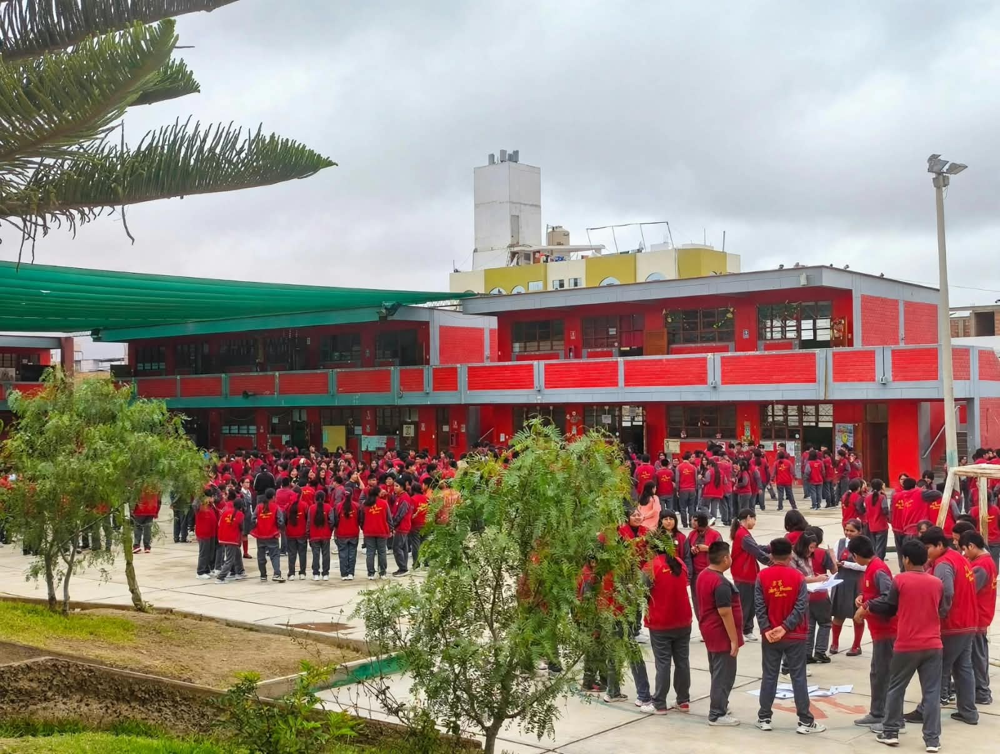

Comunidad teresiana celebra su aniversario institucional y fiesta patronal
La comunidad educativa conmemoró el día de Santa Teresita del Niño Jesús con actividades que fortalecen la identidad institucional y la convivencia entre familias, docentes y estudiantes.
- Ceremonia litúrgica y acto protocolar institucional.
- Presentaciones artísticas y procesión interna.
- Feria gastronómica y pasacalle por las calles del distrito.
- Encuentros de confraternidad deportiva.
